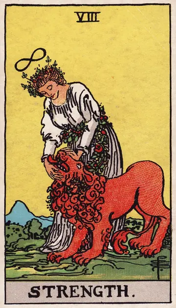

正位置力の正位置
キーワード：忍耐・優しさ・内なる強さ
恋愛
焦らずに気持ちを育てていける時です。
相手の気持ちあなたの穏やかさに、安心感を抱いているようです。
この先時間をかけて、信頼で結ばれた関係になりそうです。
アドバイス相手のペースを尊重し、じっくり向き合いましょう。
気をつけること我慢しすぎて、気持ちをため込まないように。
この先時間をかけて、信頼で結ばれた関係になりそうです。
アドバイス相手のペースを尊重し、じっくり向き合いましょう。
気をつけること我慢しすぎて、気持ちをため込まないように。
人間関係
穏やかな態度が、相手の心を開いていきます。
相手の気持ちあなたの粘り強さに、信頼を寄せているようです。
この先あなたの優しさが、相手の心を動かしそうです。
アドバイス感情的にならず、優しい言葉を選んでみましょう。
気をつけること相手を変えようと力みすぎないように。
この先あなたの優しさが、相手の心を動かしそうです。
アドバイス感情的にならず、優しい言葉を選んでみましょう。
気をつけること相手を変えようと力みすぎないように。
仕事・学業
粘り強さが実を結ぶ時期です。
この先続けてきた努力が、確かな力になりそうです。
アドバイス難しい課題ほど、根気よく続けましょう。
気をつけること無理を重ねて、体調を崩さないように。
アドバイス難しい課題ほど、根気よく続けましょう。
気をつけること無理を重ねて、体調を崩さないように。
お金
地道な節約や積み立てが、力を発揮する時です。
この先続けた分だけ、確かな蓄えになりそうです。
アドバイス少しずつでも、コツコツ続けましょう。
気をつけること我慢しすぎて、反動で使いすぎないように。
アドバイス少しずつでも、コツコツ続けましょう。
気をつけること我慢しすぎて、反動で使いすぎないように。
生活
無理なく、コツコツと暮らしを整えられる時です。
この先続けてきたことが、暮らしの支えになりそうです。
アドバイス小さな習慣を、根気よく続けましょう。
気をつけることがんばりすぎて、疲れをためないように。
アドバイス小さな習慣を、根気よく続けましょう。
気をつけることがんばりすぎて、疲れをためないように。
今日の運勢
落ち着いて、じっくり取り組める日です。
この先小さな我慢が、あとで報われそうです。
アドバイス苦手なことに、少しだけ挑戦してみましょう。
気をつけること頑張りすぎた日は、早めに休みましょう。
アドバイス苦手なことに、少しだけ挑戦してみましょう。
気をつけること頑張りすぎた日は、早めに休みましょう。
逆位置力の逆位置
キーワード：自信のなさ・焦り・感情の乱れ
恋愛
自信が持てず、一歩を踏み出しにくい時です。
相手の気持ちあなたへの気持ちに、自信が持てずにいるようです。
この先自分を信じられるようになれば、関係も前に進みそうです。
アドバイス小さなことから、自分を認めてあげましょう。
気をつけること自信のなさから、相手を試すようなことをしないように。
この先自分を信じられるようになれば、関係も前に進みそうです。
アドバイス小さなことから、自分を認めてあげましょう。
気をつけること自信のなさから、相手を試すようなことをしないように。
人間関係
感情に振り回されやすい時です。
相手の気持ちあなたにどう接すればいいか、迷っているようです。
この先心が落ち着けば、関係も穏やかになりそうです。
アドバイス感情が高ぶったら、少し時間をおいてから話しましょう。
気をつけること気持ちの浮き沈みを、周りにぶつけないように。
この先心が落ち着けば、関係も穏やかになりそうです。
アドバイス感情が高ぶったら、少し時間をおいてから話しましょう。
気をつけること気持ちの浮き沈みを、周りにぶつけないように。
仕事・学業
気力が続かず、諦めたくなりやすい時期です。
この先気力が戻れば、また前に進めそうです。
アドバイス目標を小さく分けて、一つずつクリアしましょう。
気をつけること投げ出したくなっても、すぐに結論を出さないように。
アドバイス目標を小さく分けて、一つずつクリアしましょう。
気をつけること投げ出したくなっても、すぐに結論を出さないように。
お金
お金の管理が、続きにくい時です。
この先やり方を変えれば、続けられそうです。
アドバイスハードルを下げて、続けやすい形にしましょう。
気をつけること気分での出費に気をつけて。
アドバイスハードルを下げて、続けやすい形にしましょう。
気をつけること気分での出費に気をつけて。
生活
気力が続かず、暮らしが乱れやすい時です。
この先少し休めば、また整えられそうです。
アドバイスできたことを数えて、自分をほめましょう。
気をつけること自分を責めすぎないように。
アドバイスできたことを数えて、自分をほめましょう。
気をつけること自分を責めすぎないように。
今日の運勢
気持ちが不安定になりやすい日です。
この先ゆっくり休めば、気持ちを立て直せそうです。
アドバイスできたことを数えて、自分をほめてあげましょう。
気をつけること疲れているときに、大事なことを決めないように。
アドバイスできたことを数えて、自分をほめてあげましょう。
気をつけること疲れているときに、大事なことを決めないように。
このページの文章は、アプリ「ひとやすみタロット」の結果に使っている文章です。アプリでは、あなたの相談や、カードが出た位置（今の状況・これからの流れ・アドバイス）に合わせて、この中から文章を選びます。逆位置の読み方は逆位置のことをご覧ください。